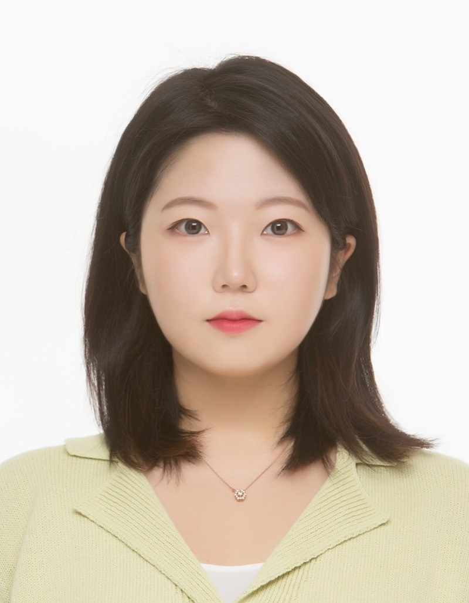

Hello, I'm
Jihea Yu.
Human-AI Interaction Researcher
I am an integrated M.S./Ph.D. student in Intelligence and Information Convergence at Seoul National University, advised by Professor Bongwon Suh at the Human-Centered Computing Lab. I am interested in improving the usability of large language models and exploring how we can develop and use AI more responsibly.
What's new
News
Started my M.S. in Intelligence and Information at Seoul National University.
Completed my bachelor's thesis on generating type-specific clarification questions for ambiguous queries.
Received the Empathy Popularity Award at the Tech for Impact Campus Achievement Presentation.
Completed an undergraduate research internship at the SNU Natural Language Processing Lab.